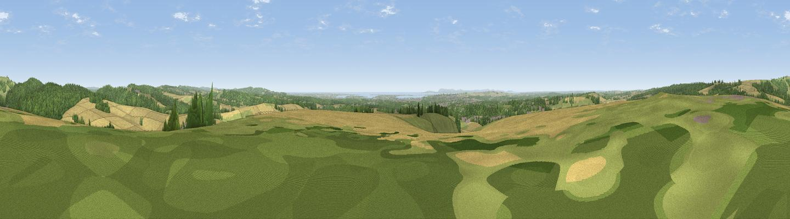

Windmill Hill
#3150 in England · top 5% of its area beats it · near ChaltonWhere it is
The exact computed spot (SU 71639 16037). Click the marker for map links.
The view, rendered

A 360° render of this exact spot computed from the terrain model, tree cover and land cover — summer colours, afternoon light, calibrated against photographs of famous viewpoints. Real trees, hedges and buildings will differ in detail.
The panorama
Grey silhouette: terrain skyline in each direction (720 bearings, Earth curvature and refraction included). Dashed green: skyline with trees (+15 m) and buildings (+8 m) as obstacles. Blue strip: how far the ground is visible on each bearing.
Where the view opens
Wedge length = distance to the farthest visible ground on that bearing (vegetation-aware). Rings at 10, 25 and 50 km.
What fills the view
37% cropland · 37% woodland · 19% grassland · 4% built-up · 3% water
Angular shares of the visible panorama (visual magnitude), not map area. Landscape diversity 0.57 (0–1 Shannon).
Key numbers
More beautiful places nearby
The staircase of upgrades: each row has a higher view potential than everything closer. Driving times are estimates from straight-line distance, calibrated against real road routing — check an actual route before setting out.
| Place | Direction | Drive | Score |
|---|---|---|---|
| Viewpoint near Buriton | N · 4 km | ~10 min | 80.0 |
| Beacon Hill | ENE · 9 km | ~18 min | 85.8 |
| Viewpoint near Upper Bonchurch | SSW · 40 km | ~59 min | 86.4 |
| Viewpoint near St. Lawrence | SSW · 42 km | ~62 min | 88.2 |
| Viewpoint near Niton | SSW · 46 km | ~66 min | 89.2 |
| Viewpoint near West Bexington | WSW · 120 km | ~144 min | 89.5 |
| The Knoll | WSW · 121 km | ~145 min | 91.0 |
50.93933, -0.98178 · source: dobih hill · position refined by local search. Computed location — check access rights before visiting.